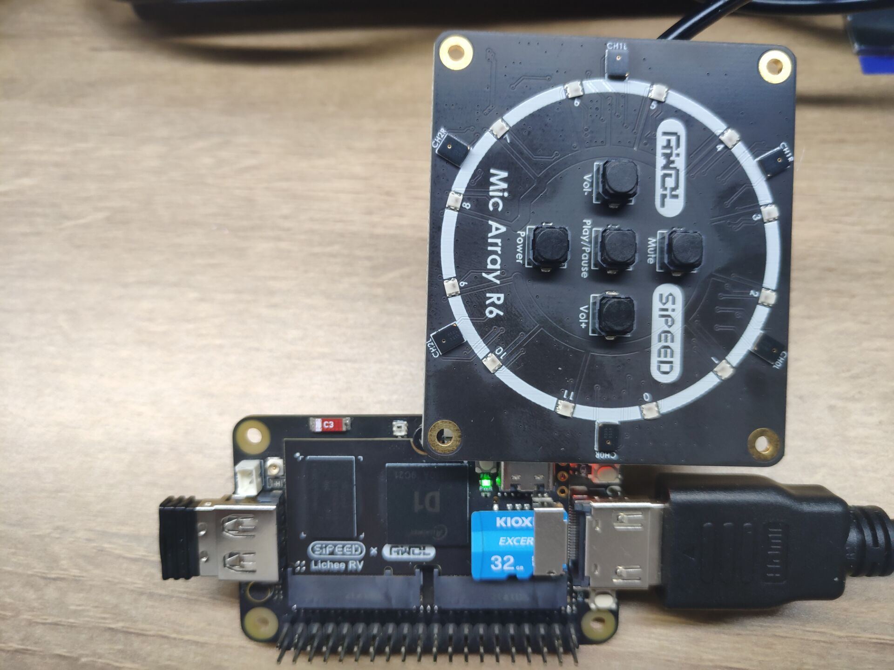
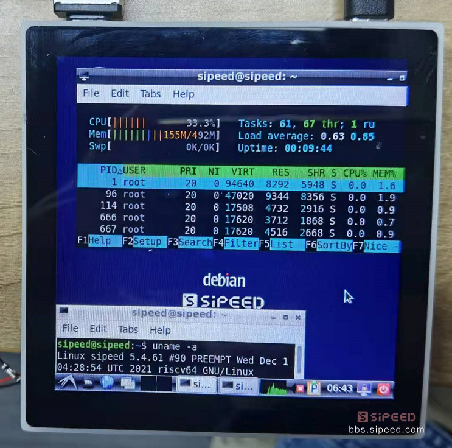
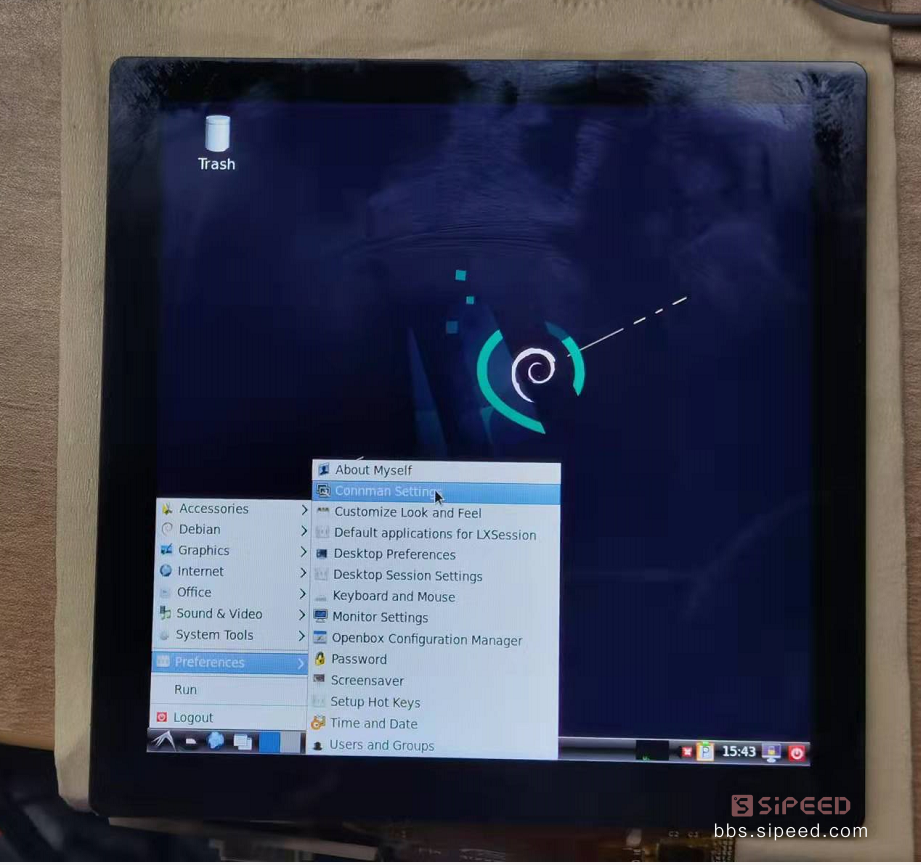

English
EnglishBasic usage
Use Dock motherboard
Connect Board
We can easily note the TX and RX pins marked on the bottom of motherboard, so we can use serial port of the ttl level wo communicate with computer(Both Tina and Debian os are OK).
For Tina OS we can use typeC cable to connect the core board with computer and use adb shell to communicate.
For Debian OS we can use keyboard and mouse to control the system.
Notes about Debian
It may run slow because of the speed of TF card.
The users name is root and password is licheepi
When using serial port connection board it always print kernel message, do following steps to stop it:
- Edit
/etc/rsyslog.confby root and change*.emerglocated in lht last line into#*.emergin this file - Restart rsyslog service by this command
/etc/init.d/rsyslog restart
Want to use terminal in GUI
- Use command
Alt+F2to run "run", then inputtermitto open a terminal.
Light LED
After succeed login OS(Both Tina and Debian are OK), we can stat blink LED.
There is an LED beside the screw fixing pad on the core board, This can be found in the dimension drawing:
Click to see dimension drawing

And from the schematic we can know the led connects with PC0 pin, and we can figure out its siginal number is ('C'-'A')x32+0 = 2x32+0=64
We can also know the IO multiplexing table from pinmux-pins file
cat /sys/kernel/debug/pinctrl/2000000.pinctrl/pinmux-pins
...
pin 64 (PC0): device 2008000.ledc function ledc group PC0 #From this we know it connects with LED
pin 65 (PC1): UNCLAIMED
pin 66 (PC2): UNCLAIMED
pin 67 (PC3): UNCLAIMED
pin 68 (PC4): UNCLAIMED
pin 69 (PC5): UNCLAIMED
pin 70 (PC6): UNCLAIMED
pin 71 (PC7): UNCLAIMED
...
We export this led GPIO first：
echo 64 > /sys/class/gpio/export #export GPIO64
Then we set this IO direction out, by which we can control its voltage level.
echo out>/sys/class/gpio/gpio64/direction #Set IO direction out
echo 1 > /sys/class/gpio/gpio64/value #Set IO high voltage level
echo 0 > /sys/class/gpio/gpio64/value #Set IO low voltage level
This is the easiest way to control IO.
We should cancel export if we don't use this IO.
echo 64 > /sys/class/gpio/unexport # cancel export GPIO64
Up to now we have succeeded Lighting led on RISC-V 64 D1.
You can also light on the serial RGB LED ws2812:
echo 255 > /sys/class/leds/sunxi_led0r/brightness #Red led on
echo 0 > /sys/class/leds/sunxi_led0r/brightness #Red led off
echo 255 > /sys/class/leds/sunxi_led0g/brightness #Green led on
echo 0 > /sys/class/leds/sunxi_led0g/brightness #Green led off
echo 255 > /sys/class/leds/sunxi_led0b/brightness #Blue led on
echo 0 > /sys/class/leds/sunxi_led0b/brightness #Blue led off
Peripheral verification
Audio function
- Check recording device
Use command arecord -l
root@MaixLinux:~# arecord -l
**** List of CAPTURE Hardware Devices ****
card 0: audiocodec [audiocodec], device 0: SUNXI-CODEC 2030000.codec-0 []
Subdevices: 1/1
Subdevice 0: subdevice 0
card 1: snddmic [snddmic], device 0: 2031000.dmic-dmic-hifi dmic-hifi-0 []
Subdevices: 1/1
Subdevice 0: subdevice 0
card 2: sndhdmi [sndhdmi], device 0: 2034000.daudio-audiohdmi-dai 20340a4.hdmiaudio-0 []
Subdevices: 1/1
Subdevice 0: subdevice 0
- Check speaker device
Use command aplay -l
root@MaixLinux:~# aplay -l
**** List of PLAYBACK Hardware Devices ****
card 0: audiocodec [audiocodec], device 0: SUNXI-CODEC 2030000.codec-0 []
Subdevices: 1/1
Subdevice 0: subdevice 0
card 2: sndhdmi [sndhdmi], device 0: 2034000.daudio-audiohdmi-dai 20340a4.hdmiaudio-0 []
Subdevices: 1/1
Subdevice 0: subdevice 0
Play recording：
arecord -D hw:1,0 -f S16_LE -t wav -d 3 t.wav #Recording
aplay -D hw:0,0 t.wav #Play recording
Besides, we can adjust volume by alsamixer application
Click to see alsamixer
┌────────────────────────────── AlsaMixer v1.2.4 ──────────────────────────────┐
│ Card: audiocodec F1: Help │
│ Chip: F2: System information │
│ View: F3:[Playback] F4: Capture F5: All F6: Select sound card │
│ Item: Headphone [dB gain: -24.00] Esc: Exit │
│ │
│ ┌──┐ ┌──┐ │
│ │ │ │ │ │
│ │ │ │ │ │
│ │ │ │ │ →
│ │ │ │ │ →
│ │ │ │▒▒│ →
│ │ │ │▒▒│ →
│ │ │ │▒▒│ →
│ │ │ │▒▒│ →
│ │▒▒│ │▒▒│ →
│ │▒▒│ │▒▒│ │
│ │▒▒│ │▒▒│ │
│ ├──┤ ┌──┐ ┌──┐ Off ┌──┐ ┌──┐ ┌──┐ └──┘ │
│ │MM│ │MM│ │MM│ │MM│ │MM│ │MM│ │
│ └──┘ └──┘ └──┘ └──┘ └──┘ └──┘ │
│ 25 63 │
│ <Headphon>FMINL ga FMINR ga ADC1 ADC ADC1 Inp ADC1 Inp ADC1 Inp ADC1 vol │
└──────────────────────────────────────────────────────────────────────────────┘USB Function
Default kernel incorporates driver for external USB flash disk.
After Plug in the USB flash disk, you can use fdisk -l command to see the new /dev/sda device
If the USB flash disk has not been formatted, you can use mkfs.vfat command to format the USB disk, then mount it.
Wireless network
Use Tina OS
LicheeRV bottom board is equipped with XR829 or RTL8723BS wifi module, can connect network by following commands:
Add following content into wpa_supplicant.conf file located in /etc/wifi/ to config wifi
network={
ssid="WiFi_name"
psk="WiFi_password"
}
Then restart board(Use command reboot), use these two commands ifconfig wlan0 up; udhcpc -iwlan0 to connect wifi.
Then we can use ssh to remote login or use scp to transfer files by network.
debian OS
It's not supported to use command line to connect network
Click System menu -> Preferences -> Connman Settings，Enable Network Settings ，check whether the interface in the network property is wlan0. Double click the network name and input WiFi password to connect wifi.

After succeeding connecting network, we can see the network IP

Display and touch
LicheeRV supports following screen：
- SPI screen 1.14 inch(TODO)
- RGB screen 4.3 inch 480x272；5.0 inch 800x480；
- RGB+SPI screen 4.0 inch 480x480(st7701s); 4.0 inch 720x720(nv3052c)
- MIPI screen 8.0 inch 1280x720(ILI9881C)
We can use following commands to view screen driver information
The following message will be different due to different mirror system
cat /sys/class/disp/disp/attr/sys
screen 0:
de_rate 300000000 hz, ref_fps:60
mgr0: 480x480 fmt[rgb] cs[0x204] range[full] eotf[0x4] bits[8bits] err[0] force_sync[0] unblank direct_show[false] iommu[1]
dmabuf: cache[0] cache max[0] umap skip[0] overflow[0]
lcd output backlight( 50) fps:59.5 esd level(0) freq(60) pos(0) reset(0) 480x 480
err:0 skip:184 irq:230715 vsync:0 vsync_skip:0
BUF enable ch[1] lyr[0] z[16] prem[N] a[globl 255] fmt[ 0] fb[ 480, 480; 480, 480; 480, 480] crop[ 0, 0, 480, 480] frame[ 0, 0, 480, 480] addr[ffe00000, 0, 0] flags[0x 0] trd[0,0]
Test screen color bar ：echo 1 > /sys/class/disp/disp/attr/colorbar
Play video
Now we can play BadApple On licheeRV Click me to download video
FFmpeg has been built in Tina image, which is a powerful multimedia library, can be used for screen recording or play video.
Recording command：
ffmpeg -f fbdev -framerate 10 -i /dev/fb0 record.avi
Play command (They are play audio from speaker and HDMI)
ffmpeg -i /mnt/UDISK/badapple_640480_xvid.mp4 -pix_fmt bgra -f fbdev /dev/fb0 -f alsa hw:0,0 ## speaker
ffmpeg -i /mnt/UDISK/badapple_640480_xvid.mp4 -pix_fmt bgra -f fbdev /dev/fb0 -f alsa hw:2,0 ## hdmi
Because it's decoded by cpu, so the Maximum screen resolution test is 750x540 , and it will run slower if play higher screen resolution.
Microphone array(For debian OS only)
Connect board with microphone array (make sure not reverse the cable or not reverse the pin ), then run sudo ./micarr_0609 in terminal.
If you need redevelop about microphone array, contact with support@sipeed.com

86 Panel
If your device display incorrectly, go to Questions&Answers to fix this.
Here we just show simple usage about this board, the usage for Dock also can be used for 86Panel (Except Light LED by PC0 pins)
For tina os there is no GUI, so we use debian as example.
After finishing burning debian OS, insert mirror card into the board, wait about 2 minutes to see the desktop displays on the screen, during which you can see log form uart port.

Username sipeed and Password licheepi, use mouse and keyboard to operate it.

Then we can de some basic operations.
- Use
Alt+F2to run "run", then inputtermitto new a terminal command line.

Let's try to compile and run hello world

We also provide 720P 720p high-definition screen, you can try this if you have enough money。
When you use this you need to overwrite the board-level configuration to set it in correct configurations to display.Click here to see more details.


Light LED
Because LED on the core board is reused with the 86Panel motherboard peripheral, We can't light it directly.
After connecting the LED with the reserved IO pad, we can blink it by the same ways how we blink by dock board.
Connect Internet
Connect by Cable
86 Panel supports 100 Megabit networks. And use following commands to connect to Internet after using the network cable included in the package to connect to the subnet port on the board.
ifconfig eth0 up
udhcpc -ieth0
Wireless network
You can refer to Dock wireless network
Others
Same as operating dock motherboard.
Touch screen test
Only tina OS incorporates touch demo
IF you buy 86panel package, just use command ts_test to test touch screen
There is a bug with touch-driver,that is when you remove your finger during test, the cursor stops blink while the terminal still print messages
root@MaixLinux:/# ts
ts_calibrate ts_harvest ts_print_mt ts_test ts_verify
ts_finddev ts_print ts_print_raw ts_test_mt tshowimg
USE BSP SDK
To make it easy for user to develop custom function, Sipeed provide bsp docker image of LicheeRV.
Download link:Mega netdisk
After finishing downloading docker file, decompress into tar file.
gzip -d licheerv_d1_compile.tar.gz #Decompress into tar file
docker import licheerv_d1_compile.tar licheerv_d1_compile:latest #import docker image
After succeed running it's suggested to relogin and username nihao password sipeed123
sudo docker run -it licheerv_d1_compile:latest /bin/bash # Start D1 compile docker image in interactive mode
login # change user
You can use following commands to finish compiling.
cd ~/sdk/tina-d1-open_new/
source build/envsetup.sh
lunch # choose 1
make menuconfig # unchoose alsa-plugin, otherwise it fail to compile
# alsa-plugins path in menuconfig
#.
#└── Libraries
# └── alsa-plugins
make -j8
pack
There are some new dts file in this SDK, you can use them if necessary
They are in device/config/chips/d1/configs/nezha/board_xxx.dts
Other SDK developing manual can refer to relevant documents on the Allwinner development platform
https://open.allwinnertech.com/
If you need other SDK please visit allwinner official website: https://d1.docs.aw-ol.com/en
WAFT developer's guide
TODO